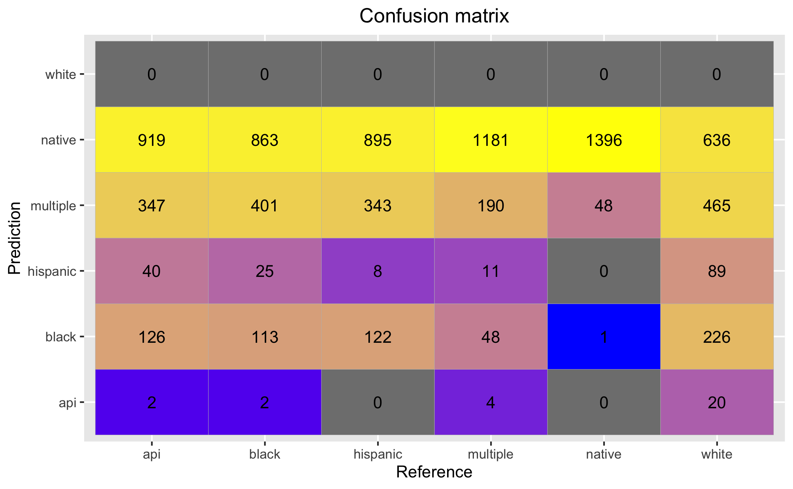

Naive Bayes in Python with Labeled Text Data (Link to code)Preparing dataTo gather and prepare the text data, I used data from Twitter gathered by API containing the key words "apple", "goldman sachs", and "home depot". These are three companies I am interested in learning more about in terms of their initiatives in diveristy, equity, and inclusion. Given the three different datasets that contain Tweets that include the three different companies, I want to classify words to the company. To prepare the data, I used a lemmatizer to extract the bases of the text data, removed punctuation and stopwords, and conducted other data cleaning processes detailed in the data cleaning section. For the Naive Bayes modelling process specifically, I created two columns for each Tweet - the first one is for the Tweets themselves, and the second column contains the name of the company that the Tweets reference. I merged the three dataframes vertically using the concat function from the pandas library. Then, I assigned X and y values, where X means the independent or predictor variables and y is the dependent or outcome variable. In the context of this project, X is the given words in a Tweet (df['tweets']) while y is company that the Tweet mentions (df['company']). I used SKLearn's CountVectorizer to assign a column for each vocabulary term and prepare the text data for the Naive Bayes modelling process. Finally, I partitioned the data into training and test sets to prepare for modelling and checked their shapes to make sure they make sense. Modelling and evaluationI used the GaussianNB function provided by Scikit-learn naive_bayes to implement the Gaussian Naive Bayes algorithm for classification. First, I initialized the model, which creates a blueprint for the modelling process to occur. Then, I fitted the intialized model to the training data and then generated y predictions. The model achieved an accuracy score of 66.5 for the training data and 65.7 for the test data, which is also visualized in the graph below. This means that around 66.5% of the predicts were correct for the training data and 65.7% of the predictions were correct for the test data. I expected there to be a larger deviation between the accuracy of the predictions on training and test data, so the closeness between the two scores implies that they work at a similar accuracy. Please see the confusion matrix of the model below. A confusion matrix visualizes and summarizes the performance of a classification algorithm. On the y-axis we have the true labels, and on the x-axis we have the predicted labels. The diagonal, which shows the true negatives and true positives, shows that the accuracy of predictions is highest for Tweets mentioning Apple, followed by Goldman Sachs, and finally Home Depot. In conclusion, it looks like my model has predicted both training and test data at a rate of 65-66%, which is pretty accurate. When we examine the data further, we see that there is a larger portion of false positives for Apple than for the other two companies. I wonder if it is also beacuse the word "Apple" is not just associated with the company Apple, but also the noun apple which could be associated with Home Depot which sells gardening tools and other things related to apples. Overall, it looks like the model performed fairly well, especially for the prediction of the company Apple. Naive Bayes in R with Record Data (Link to code)Preparing dataTo gather the record data, I retrieved sample workforce demographic data from Revelio labs. The data details the ethnicity, gender, salary, seniority, headcount, inflow, and outflow of various members of the workforce of the three companies mentioned previously around the world from years 2011-2021. Given that my specific interest is in the correlation between race, gender, and outcomes like salary and seniority, I want to predict race given a predictor like salary. To prepare the data, I cleaned the rows and columns. Due to the sheer volume of the data, I only included rows where the data was collected in 2020 (df['year'==2020) and geographic region is North America (df['region'=='Northern America']). I created a new dataframe called mydata, containing the salary and ethnicity columns, and renamed the columns as mypredictor and myresponse to ensure reproducibility. Then, I set seed and used the sample function to split the data into X and y training and test sets along a 80%/20% split. I checked the dimensions and lengths of each variable to ensure that they make sense. Modelling and evaluationI used the gaussian_naive_bayes() function from the naivebayes library in R to create model. Then, I used the predict() function to generate ypred, which are y predictions, from X_train. I tested the accuracy score to evaluate the effectiveness of the model. The accuracy of the model for the training data is higher at 77% than the model for the test data at 20%. This contrasts the model for the text data explained previously where the accuracy of the model for both training are similarly high, t To understand further the accuracy, I also generated a confusion matrix to evaluate the stength of the predictions. If we examine the diagonal which gives true positives and true negatives, we can see that the "native" category gives the highest number of true positives, which implies that the salary of workers who identify as native are the most predictable. It is intruging that there is a score of 0 for the prediction labels "white", which warrants further exploration. Overall, I think the model predicted the training data well at 77%, but the testing data poorly at 20%. In the future, I plan to normalize the data first so that the predictions are hopefully more accurate. I plan to also train the model on several other features such as seniority, outflow/inflow, and gender. |